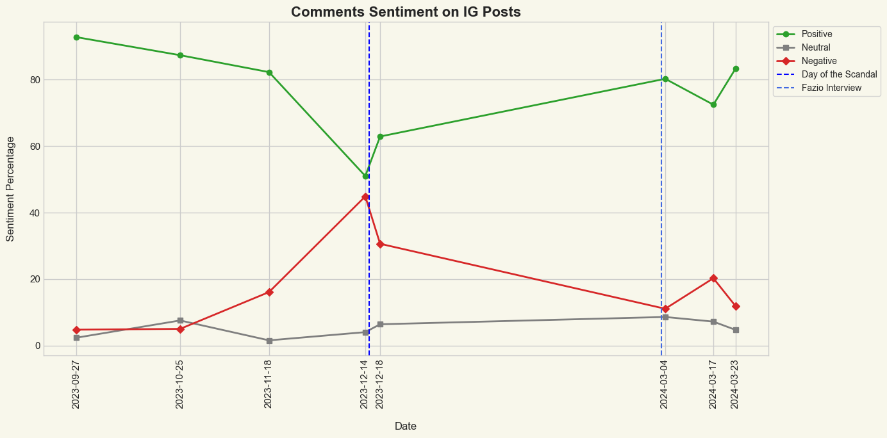
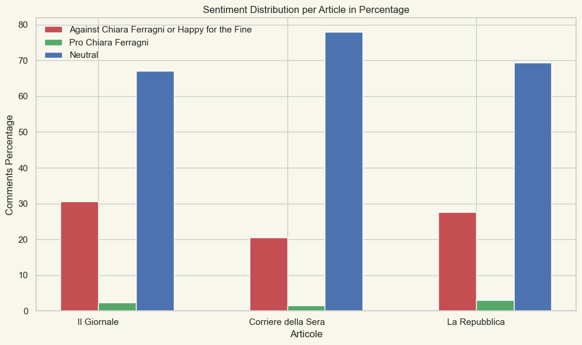

Pandoro Gate: public reaction to an influencer scandal
A business case set by Deloitte for the Data Science in Action course at LUISS. We measured how the public and the press reacted to the Ferragni–Balocco “Pink Christmas” pandoro case across four channels, and what it cost the Ferragni brand.
- Client
- Deloitte (business case)
- Course
- Data Science in Action, MSc Data Science & Management, LUISS
- Team
- Andrea Marcoccia (lead), Giorgia Costantini, Filippo Navarra
- My part
- News collection, topic modelling, methodology, analysis and writing
- Date
- May 2024
- Stack
- Python, Mistral API, gensim, NLTK, newspaper3k, PRAW, Streamlit
The question
In December 2023 Italy’s antitrust authority fined Chiara Ferragni’s companies over a charity-linked pandoro campaign with Balocco. The brief was to read the reaction quantitatively rather than anecdotally: who was angry, where, for how long, and what the press was actually writing about.
Data
We kept only direct reactions on every platform (no nested replies), so each comment answers the post itself.
| Source | What | Comments / items |
|---|---|---|
| 9 of Ferragni’s own posts, Sept 2023 – Mar 2024, exported and stripped of replies | 627 | |
| Posts by La Repubblica, Corriere della Sera and Il Giornale (Apify) | 804 | |
| 3 threads in r/Italia and r/Italy, top-level comments (PRAW) | 304 | |
| News | Google News results for three queries, full text via newspaper3k | 204 articles |
The news pipeline was my part: an asynchronous requests-html session renders the Google News results, collects article links, and newspaper3k extracts the body text.
Classifying sentiment with an LLM
Comments were short, informal, full of emoji and sometimes in several languages. Rather than strip that signal to fit a pre-trained classifier, we prompted Mistral models directly:
- Instagram:
open-mixtral-8x7b, three labels (positive, neutral, negative). - Facebook and Reddit:
mistral-smallwith a four-way stance scheme (against Ferragni, pleased about the fine, neutral, in favour of Ferragni), with the headline of the post passed as context, since a comment like “finally” means nothing without it.
Model choice per task was a cost trade-off: the Mixtral model at $0.7 per million tokens for the high-volume, simpler task, Mistral Small for the more nuanced stance task. Labels were cached to disk so nothing was classified twice. On an external labelled Twitter benchmark Mistral Small reached only about 56% accuracy, which we report as a limitation below.
What the comments said

The picture is less one-sided than the headlines suggested. On her own Instagram, where the audience is self-selected, positivity fell from 93% in September to 51% under the post of 14 December, then recovered to around 80% by March 2024. On newspaper pages and Reddit most comments were neutral or descriptive; among those that took a side, comments against her or celebrating the fine outnumbered supportive ones by more than ten to one.

What the press wrote about
On the 204 articles I tokenised with NLTK, removed Italian stop words, filtered rare and ubiquitous terms (no_below=10, no_above=0.5) and fitted gensim LDA models with 2 to 10 topics. Three topics had the best coherence (0.577 against 0.560 for five); after tuning the number of passes the final model scored 0.651.
| Topic | Share of tokens | Characteristic terms |
|---|---|---|
| Commercial | 39.4% | sales, branded products, Antitrust, Fenice Srl |
| Social media & public life | 33.8% | Fedez, video, followers, Instagram, communication |
| Legal | 26.9% | fraud, prosecutor’s office, Codacons, investigation |
Business impact
From secondary sources we estimated the commercial cost: Ferragni lost about 515,000 of roughly 29 million followers, engagement fell from 5.8% (January 2023) to 0.18% (March 2024), and sponsored posts dropped from 23 a month to one, taking estimated monthly sponsorship income from over €2M to about €90k. Safilo, Coca-Cola and Monnalisa ended partnerships. Results were presented to Deloitte in a Streamlit dashboard, with the LDA topics explorable through pyLDAvis.
Limitations
- Samples are small (at most 100 comments per Instagram post) and we did not hand-label a subset of our own data to validate the LLM labels; the 56% external benchmark is a reminder that the stance labels are noisy.
- Instagram comments come from Ferragni’s own followers and are not representative of the wider public, which is why we added newspapers and Reddit.
- The economic figures are compiled from press sources, not computed by us.